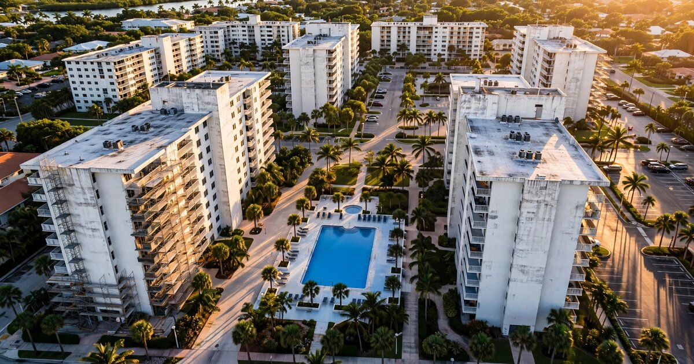

HOA Reserve Health Intelligence SaaS for Homebuyers and Lenders
Association Reserves, the nation's largest reserve study firm, analyzed more than 100,000 reserve studies conducted between 1986 and 2025 and found that 74 percent of homeowners associations in the United States are underfunded. Not slightly below target. Not in a reasonable catch-up position. Three quarters of the 373,000 community associations managing $13.1 trillion in American home values are sitting on a funding gap that they are legally permitted to fill by sending you a five-figure bill with 30 days' notice.

The Problem
Seventy-eight point one million Americans live in community associations. That number comes from the Foundation for Community Association Research's 2025 Statistical Review, the most comprehensive annual census of homeowners associations, condominium communities, and housing cooperatives in the country. The foundation counts 373,000 associations as of year-end 2025, up from 369,000 two years earlier, with projections of 377,000 by end of 2026. Seventy-seven percent of all new housing built for sale in the United States is now governed by a community association. This is not a niche housing model. It is the default.
Each association collects monthly assessments to fund two buckets: operating expenses (landscaping, management, insurance, utilities) and reserves (the savings account for major repairs and replacements that every building eventually needs). Collectively, American homeowners contribute $27.4 billion annually to reserve funds. That sounds enormous until you measure it against the obligation. Roofs wear out. Elevators fail. Parking garages corrode. Sewer lines collapse. The question is never whether these things will happen but whether the money is there when they do.
For most associations, it is not. Association Reserves reports that 74 percent of HOAs are underfunded as of 2025, the highest rate the firm has recorded in nearly four decades of tracking. The industry standard considers 70 percent funded as the minimum for a healthy association. Below 50 percent is a red flag. Below 30 percent is a crisis. When a major repair arrives and the reserves cannot cover it, the board has three options: levy a special assessment (a one-time bill that can reach tens of thousands of dollars per unit), take out a loan (which increases monthly dues for years), or defer the repair (which makes the eventual cost worse). According to a Community Associations Institute survey, over 70 percent of HOAs with insufficient reserves have resorted to special assessments.
The information asymmetry in this market is staggering. A homebuyer considering a $500,000 condo can access the home's inspection report, the neighborhood's crime statistics, the school ratings, the flood zone designation, and the property tax history. They cannot, in most cases, access a standardized measure of whether the association that controls the building's physical and financial health is solvent. Reserve studies exist, but they are PDF documents of wildly variable quality, prepared by firms with no standardized methodology, disclosed inconsistently, and almost never comparable across associations. A buyer in Florida gets a Structural Integrity Reserve Study mandated by post-Surfside legislation. A buyer in Texas gets whatever the board volunteers to share. A buyer in 38 states gets nothing unless they know to ask.
The Surfside collapse made this visible. Ninety-eight people died when Champlain Towers South partially collapsed in June 2021. The building's reserve study had flagged $15 million in needed repairs. The board had $700,000 in reserves. Florida's legislative response, SB 4-D, mandated structural integrity reserve studies for buildings of three or more stories. But compliance has been dismal: by February 2025, the Florida Department of Business and Professional Regulation reported that only 36 percent of the 11,270 required associations had completed their studies. The deadline has already been extended once, to December 31, 2025. The problem is not that boards refuse to comply. The problem is that nobody built the infrastructure to make compliance scalable, comparable, and useful.
The Catalyst Nobody Saw Coming
In March 2026, Fannie Mae and Freddie Mac announced that community associations must fund reserves at a minimum of 15 percent of their total annual budgets, up from 10 percent, effective 2027. If an association does not meet this threshold, lenders will stop approving conventional mortgages for units in that building.
Read that again. Starting in 2027, a condo association's reserve funding level directly determines whether you can get a mortgage to buy a unit. This transforms reserve health from an obscure board governance issue into a first-order lending criterion, equivalent in practical impact to a property's appraisal value or a borrower's credit score. A May 2026 survey from the Foundation for Community Association Research found that 54 percent of associations plan to increase regular assessments in response, and 14 percent plan to issue special assessments. The repricing is already underway.
The lending requirement creates a new class of buyer: someone who needs to know, before making an offer, whether the building they want to buy into will be mortgage-eligible next year. It creates a new class of seller: someone whose unit's market value is now contingent on their board's reserve discipline. It creates a new class of lender: one that needs automated reserve health data at portfolio scale, not a PDF faxed from a management company. And none of these participants have a tool that tells them what they need to know.
Market Size
TAM calculation: 373,000 community associations (CAI 2025 data). At a blended subscription of $49 per month across homebuyer, agent, and board tiers, the theoretical maximum is $219 million in ARR. The more relevant number is the addressable population: approximately 5.5 million existing-home transactions per year in the U.S. (NAR data), of which roughly 30 percent involve properties in community associations, yielding 1.65 million transactions per year where a buyer would benefit from reserve health intelligence. At a one-time buyer report price of $39 (comparable to a home inspection or flood certificate), transaction-based revenue potential is $64 million annually.
The recurring SaaS opportunity sits in three segments. First, HOA boards and management companies: the 50,000 to 60,000 professional management companies and self-managed associations that need ongoing reserve tracking and compliance monitoring, particularly as the Fannie Mae 15 percent threshold creates a continuous obligation. At $79 per month for a board dashboard with reserve health scoring, funding trajectory modeling, and compliance alerts, penetration of 8,000 associations in Year 3 yields $7.6 million ARR. Second, real estate agents: the 1.5 million licensed agents (NAR) who can use reserve health reports as a differentiated buyer advisory tool. At $29 per month for unlimited lookups, penetration of 15,000 agents yields $5.2 million. Third, lenders and appraisers: enterprise API access to reserve health data for portfolio-level risk assessment. At $2,500 per month for an enterprise seat, 200 lender clients yield $6 million.
Year 3 target across all segments: $18.8 million ARR plus $12 million in transaction-based report revenue, totaling approximately $31 million in combined revenue. The enterprise lending segment alone could scale substantially beyond this if reserve health data becomes a standard input to automated underwriting systems, which the Fannie Mae requirement strongly incentivizes.
The Product
A reserve health intelligence platform that ingests, standardizes, and scores community association financial data to produce the first comparable risk metric for HOA reserve adequacy. Core modules:
- Reserve Health Score: A standardized 0-to-100 composite rating for any community association, combining percent funded (the ratio of current reserves to the ideal funded balance), funding trajectory (whether contributions are increasing, flat, or declining relative to the degradation curve), special assessment history (frequency, magnitude, and recency of one-time levies), insurance adequacy (master policy coverage relative to replacement cost), and board governance signals (meeting frequency, budget transparency, management continuity). The score is designed to be immediately interpretable by a homebuyer who has never read a reserve study: below 40 means high risk of special assessments, 40 to 60 means moderate risk with catch-up required, 60 to 80 means adequately funded with a reasonable trajectory, above 80 means strong. Think of it as a FICO score for the building you are buying into, not the borrower
- Fannie Mae compliance tracker: A real-time monitor that calculates whether an association meets the incoming 15 percent reserve-to-budget threshold, projects the timeline to compliance for associations that fall short, and models the assessment increase required to reach the target. For management companies overseeing portfolios of 50 to 500 communities, this is a triage dashboard: which of your buildings will lose mortgage eligibility in 2027, and what is the minimum dues increase to prevent it?
- Special assessment risk model: Using disclosed financial data (budgets, reserve studies, and audited financials that many states require associations to file or disclose to members), the platform models the probability that a given association will levy a special assessment within the next 1, 3, or 5 years. The inputs: current percent funded, age and condition of major components (roof, elevator, parking structure, plumbing risers), recent insurance premium trajectory, and the gap between current contributions and the funding plan's required annual contribution. A buyer considering two condos at the same price point can compare their special assessment risk profiles and make an informed decision. Nobody offers this today
- Reserve study standardization engine: Reserve studies are prepared by hundreds of independent firms using no universal format. The platform ingests PDF reserve studies (the most common delivery format), extracts component inventories, useful life estimates, replacement costs, and funding plans via document AI, and normalizes them into a comparable data structure. This creates, for the first time, a cross-association dataset of reserve obligations and funding adequacy that can be aggregated, benchmarked, and scored. The cold start challenge is real but solvable: Florida's SIRS mandate alone covers 11,270 associations, and the disclosure requirements in California (every 3 years), Nevada, Oregon, Virginia, Hawaii, and nine other states create a steady flow of machine-readable reserve data from public or semi-public filings
- Transaction intelligence layer: For real estate agents and title companies, a pre-closing reserve health report that sits alongside the home inspection, title search, and HOA disclosure package. The report synthesizes the association's Reserve Health Score, Fannie Mae compliance status, special assessment history and risk forecast, and a comparison to peer associations in the same metro area and building type. This becomes a value-added service the agent provides to every buyer, differentiating their practice in a market where condo buyers are increasingly anxious about hidden costs
Unit Economics
| Metric | Value |
|---|---|
| Buyer report (one-time) | $39/report |
| Agent subscription (unlimited lookups) | $29/month |
| Board/management dashboard | $79/month per association |
| Enterprise API (lender/appraiser seat) | $2,500/month |
| Blended SaaS ARPU | $52/month |
| Document AI processing cost per reserve study | $6 |
| Data infrastructure cost per subscriber/month | $5 |
| Customer acquisition cost (buyer report) | $8 |
| Customer acquisition cost (agent SaaS) | $120 |
| Customer acquisition cost (board SaaS) | $280 |
| Expected LTV (agent, 14-month avg retention) | $348 |
| Expected LTV (board, 36-month avg retention) | $2,444 |
| LTV:CAC ratio (agent) | 2.9:1 |
| LTV:CAC ratio (board) | 8.7:1 |
| Gross margin | 84% |
| Startup cost (18-month runway) | $3.2M |
| Break-even | 20 months |
Methodology note: Agent retention of 14 months reflects the cyclical nature of real estate: agents subscribe when they have an active condo buyer and cancel between engagements. The 14-month average captures roughly one buyer cycle plus re-engagement for the next. Board retention of 36 months reflects the stickier nature of compliance monitoring: boards that adopt a reserve tracking tool during the Fannie Mae transition are unlikely to cancel while the compliance obligation persists, and the annual reserve study update cycle creates a natural renewal trigger. The $8 buyer CAC assumes organic discovery via Google search (high-intent queries like "is my HOA financially healthy" and "condo special assessment risk") and real estate agent referrals; the product is distributed at the point of transaction through title company and agent partnerships, not direct consumer marketing. Gross margin of 84 percent reflects a software-plus-document-AI model where the primary costs are reserve study ingestion (NLP/OCR processing), public records aggregation, cloud infrastructure, and a small data operations team maintaining quality on the standardization pipeline. Board LTV calculation: $79 × 36 months × 86% gross margin = $2,444. Agent LTV: $29 × 14 months × 86% = $348.
Go-to-Market
Phase 1 (months 1-8): Build the reserve study standardization engine and Reserve Health Score model using Florida as the beachhead market. Florida is the ideal starting point for three reasons: (1) the SIRS mandate requires 11,270 associations to produce standardized structural reserve studies, creating a large pool of comparable documents; (2) post-Surfside regulatory urgency means boards, buyers, and lenders are already primed for the value proposition; and (3) the Florida Division of Condominiums, Timeshares and Mobile Homes is building an online compliance registry (required by HB 913, effective October 1, 2025) that will create a public data feed of association compliance status. Ingest every SIRS study that can be obtained through public records requests, buyer disclosure packages, and a voluntary upload incentive (free Reserve Health Score for boards that share their study). Target: score 3,000 Florida associations by month 8.
Phase 2 (months 9-16): Launch the buyer report product and agent subscription. Distribute through partnerships with Florida title companies (First American, Old Republic, Stewart) who already compile HOA disclosure packages as part of the closing process. Adding a $39 Reserve Health Report to the disclosure package requires no behavior change from the title company and adds a revenue line to their per-transaction fee schedule. Simultaneously, launch in California (reserve studies required every 3 years under the Davis-Stirling Act, Civil Code 5550), where the volume of existing studies and the state's propensity for real estate technology adoption create a natural second market. Launch the board dashboard for management companies, targeting the top 50 property management firms by association count (AppFolio, RealPage/Buildium, CINC Systems, Vantaca) with an integration play: embed the Reserve Health Score in their existing board portal as a white-labeled compliance widget.
Phase 3 (months 17-24): Expand to the remaining 10 states that mandate reserve studies or funding (Nevada, Oregon, Hawaii, Virginia, Colorado, Delaware, Utah, Washington, Maryland, Tennessee). Launch the enterprise API for lenders, timed to the Fannie Mae 15 percent threshold taking effect in 2027. The API delivers reserve health data programmatically into automated underwriting systems, enabling lenders to flag non-compliant associations at the loan origination stage rather than discovering the problem during manual condo project review. Pursue a data licensing agreement with Fannie Mae's condo project approval team, which currently reviews project eligibility through a manual questionnaire process (Form 1076/1077) that the Reserve Health Score could partially automate.
Competitive Landscape
| Company | What It Does | Reserve Health Scoring? | Pricing |
|---|---|---|---|
| Association Reserves | Nation's largest reserve study firm (100K+ studies since 1986); offers uPlanIt interactive funding tool and FiPhO Score | FiPhO Score exists but is proprietary to their clients, not a cross-association benchmarking tool | $2,000-$10,000 per study |
| Reserve Advisors | Reserve study preparation and updates; primarily Midwest and East Coast | No standardized scoring; delivers PDF reports per engagement | $2,500-$8,000 per study |
| Solume | Startup converting static reserve study PDFs into live, real-time reserve management dashboards | Emerging; focused on making individual studies interactive, not cross-association benchmarking | SaaS pricing not publicly disclosed |
| AppFolio / Buildium / Yardi | HOA management software suites; accounting, communications, maintenance, governance | No; manage reserve fund accounting (the ledger) but do not score reserve health or model risk | $1-$5 per unit/month |
| Condo Control Central / Vinteum | Specialized condo management platforms | No; governance and communication tools, not financial risk analytics | Per-unit SaaS pricing |
| This startup | Cross-association reserve health scoring, Fannie Mae compliance tracking, special assessment risk modeling, and transaction intelligence | Core product: standardized 0-100 Reserve Health Score comparable across 373,000 associations | $29-$2,500/month SaaS + $39 buyer reports |
The gap is structural and it mirrors a familiar pattern in financial data markets. The entities that produce reserve studies (Association Reserves, Reserve Advisors, and hundreds of smaller firms) have deep expertise in evaluating individual associations but no incentive to build a cross-association benchmarking platform. Their business model is per-engagement consulting: they are paid to assess one community, not to score all of them. The entities that manage associations (AppFolio, Buildium, Yardi) have the financial data flowing through their accounting systems but do not analyze it for risk or surface it to external parties like buyers and lenders. The entities that lend against these properties (Fannie Mae, Freddie Mac, individual banks) need the data most urgently but have no pipeline to collect it at scale. The condo project approval process still involves a human reviewer reading a PDF questionnaire and making a judgment call. The opportunity is not to replace any of these players but to build the intelligence layer that sits between them, turning fragmented, incomparable, inconsistently disclosed reserve data into a standardized risk metric that all of them can use.
Why Now
Five forces are converging. First, the Fannie Mae 15 percent threshold, effective 2027, transforms reserve health from a governance best practice into a lending prerequisite. This is the single most important structural change in the economics of community associations since the creation of the condominium form in the 1960s. Every lender, every appraiser, every title company, and every real estate agent now needs reserve health data as a standard input to the transaction. The demand did not exist three years ago. It is now non-negotiable.
Second, the post-Surfside regulatory wave is creating a disclosure infrastructure that did not previously exist. Florida's SIRS mandate, HB 913's online registry requirement, the seven-day buyer rescission period for condo resales, and the requirement that boards upload meeting minutes and repair records to a state portal all create new data flows. California has required reserve studies every three years since the Davis-Stirling Act. But the convergence of mandates across 13 states (up from 8 a decade ago) plus the federal lending standards creates, for the first time, a critical mass of comparable data.
Third, U.S. Census data from 2024 shows that 21.6 million households, one quarter of all owner-occupied homes, now pay HOA or condo fees. The median condo fee hit $420 per month in 2025, up 29 percent from $325 in 2019. Three million households pay over $500 per month. These are not trivial sums, and they are rising: 54 percent of associations plan further increases, per the Foundation for Community Association Research's May 2026 survey. Homebuyers are paying more and understanding less about what they are buying into. The appetite for transparency is acute.
Fourth, the reserve study industry's delivery format is finally vulnerable to automation. Reserve studies have historically been produced as bespoke PDF documents, each firm using its own template, terminology, and component taxonomy. Document AI (large language models fine-tuned for structured extraction from semi-structured documents) can now parse a 40-page reserve study PDF, extract the component inventory, useful life estimates, replacement costs, and funding plan, and normalize the data into a comparable structure in minutes rather than the hours it would take a human analyst. The technology to build the standardization engine existed in prototype three years ago. It is production-grade today.
Fifth, Florida's compliance crisis proves the market need in real time. Sixty-four percent of required associations had not completed their SIRS studies as of February 2025. The legislature responded by extending the deadline and authorizing lines of credit for reserve obligations. The state is simultaneously tightening requirements and acknowledging that associations cannot comply. A technology platform that reduces the cost and complexity of reserve study preparation, monitoring, and compliance reporting is not an efficiency play. It is an enabling infrastructure without which the regulatory framework does not function.
Original Contribution: The Hidden Assessment Tax
A calculation nobody has published: What is the aggregate annual special assessment burden on American homeowners, and how does it compare to the amount they would have paid through adequately funded monthly dues? We can estimate this. The Foundation for Community Association Research reports 373,000 associations. Association Reserves finds 74 percent are underfunded. That is 276,000 underfunded associations. CAI survey data indicates over 70 percent of underfunded associations have resorted to special assessments. That yields approximately 193,000 associations that have levied or will levy special assessments to cover reserve shortfalls.
The median special assessment for a major repair (roof, elevator, parking structure, plumbing) ranges from $5,000 to $15,000 per unit based on reported examples in Florida, California, and New York. Using a conservative median of $8,000 per unit and an average association size of 83 units (78.1 million residents across 373,000 associations, assuming 2.5 persons per household, yields approximately 31 million units, or 83 per association), the aggregate special assessment pool is $8,000 × 83 × 193,000 = roughly $128 billion in total special assessment exposure. Not all of this materializes in a single year. If the average special assessment cycle is 10 years (one major component failure per decade), the annualized special assessment burden is approximately $12.8 billion.
Compare this to what adequate reserve funding would cost. The Foundation reports $27.4 billion in annual reserve contributions. If contributions were increased by roughly 35 percent to bring the average association from its current underfunded state to the 70 percent funded threshold, the additional annual cost would be approximately $9.6 billion. Spread evenly across 31 million units, that is $310 per unit per year, or about $26 per month in additional dues. The alternative is a $8,000 special assessment every decade, which works out to $67 per month amortized. The hidden assessment tax, the cost of underfunding reserves and paying for it through emergency levies rather than planned contributions, is approximately $41 per unit per month in excess cost. Americans living in underfunded associations are paying roughly 60 percent more for building maintenance than they would under adequate funding, they just do not see it because the bill arrives as a lump sum instead of a line item.
Limitations
The 74 percent underfunding figure from Association Reserves carries a significant selection bias caveat. Associations that commission professional reserve studies are, by definition, the ones that take reserve planning seriously enough to pay $2,000 to $10,000 for the analysis. The true underfunding rate across all 373,000 associations, including the many that have never conducted a reserve study at all, is likely higher. But the figure could also overstate the problem for the subset of well-managed associations in states with strong reserve study mandates. The national average masks enormous variation by state, building type, and management quality.
The Reserve Health Score faces a fundamental data coverage challenge. In the 13 states that mandate reserve studies, the data exists but is fragmented across thousands of preparation firms, management companies, and county recording offices. In the 37 states with no mandate, the data often does not exist at all. The cold-start strategy of beginning in Florida and California captures the most data-rich markets, but scaling to a national product requires either regulatory expansion (more states mandating studies) or voluntary adoption (associations uploading studies in exchange for free scoring), both of which are slow. A national Reserve Health Score with meaningful coverage across all 373,000 associations is a five-to-seven-year buildout, not a two-year MVP.
The special assessment risk model relies on assumptions about component failure timing that are inherently uncertain. A 25-year-old roof may last 30 years or fail at 22. Elevator modernization costs vary by 40 percent depending on the contractor and the supply chain environment. The model can identify associations that are statistically overdue for a major expense, but it cannot predict the quarter in which that expense will materialize or the exact amount the board will levy. Risk scoring should be communicated as probabilistic, not deterministic, and any marketing that implies otherwise would be irresponsible.
Finally, the $39 buyer report model depends on integration into the closing process, which is controlled by title companies and real estate agents who take a commission on every add-on. If the product is distributed through title company partnerships, the title company may demand 30 to 50 percent of the report fee, compressing margins on what is already a low-priced transaction product. The buyer report may function better as a loss leader that acquires agents into the $29/month subscription than as a standalone profit center.
Strongest Counterargument
The strongest case against this startup is that Association Reserves, the company that published the 74 percent underfunding figure in the first place, already has everything it needs to build this product and has chosen not to. Association Reserves has conducted over 100,000 reserve studies across four decades. It has the largest proprietary dataset of component inventories, replacement costs, useful life estimates, and funding plan outcomes in the country. It has a nationally recognized brand (founder Robert Nordlund literally helped write the National Reserve Study Standards). It has already built FiPhO, a financial health scoring product, and uPlanIt, an interactive funding tool. It employs certified Reserve Specialists in offices across the United States.
If the market demanded a standardized, cross-association reserve health score accessible to buyers and lenders, Association Reserves could build it faster, with better data, and with more credibility than any startup. The fact that it has not done so in 39 years of operation suggests one of two things: either the market does not want what you think it wants, or Association Reserves' business model structurally prevents it from building this product. The second explanation is more plausible and more instructive. Association Reserves earns revenue by preparing individual reserve studies for individual clients. A standardized scoring platform that allows buyers to compare associations without commissioning a study threatens the per-engagement consulting model. It is the same dynamic that prevented Moody's and S&P from disrupting themselves in structured credit before 2008: the incumbents who know the most have the least incentive to democratize their knowledge because their revenue depends on the knowledge staying proprietary.
The risk for a startup is that the Fannie Mae threshold changes this calculus. If lenders begin requiring standardized reserve health data at portfolio scale, Association Reserves could pivot in 18 months, licensing its dataset to lenders and offering a scoring product that a startup with zero data cannot match. A startup's defensibility depends entirely on building the cross-association network effect before the incumbents respond: the more associations scored, the more useful the benchmarking, the more agents and buyers adopt it, the more associations participate to maintain competitive visibility. But if Association Reserves moves first, the startup's data advantage evaporates before it materializes.
The Bottom Line
The American condo and HOA market is repricing around a fact that 78 million residents can no longer ignore: three quarters of their buildings are underfunded, the federal lending infrastructure now demands proof of solvency, and nobody has built the tool that lets a buyer, a lender, or a board see where they stand relative to everyone else. The Fannie Mae 15 percent threshold, effective 2027, converts reserve health from an optional governance metric into a lending prerequisite that every mortgage originator will need to verify. Florida's post-Surfside mandate is generating the first large-scale disclosure dataset. Thirteen states now require reserve studies or funding plans. The data exists. The demand is legislated into existence. The format problem (thousands of incomparable PDFs) is newly solvable with document AI. The aggregate hidden assessment tax on American homeowners is approximately $12.8 billion per year, the difference between what underfunded associations levy in emergency assessments and what they would have collected through adequate monthly dues. The question is whether a startup can build the cross-association data network before Association Reserves, with its 100,000-study head start, decides the market is worth cannibalizing its own consulting revenue to serve.
What You Can Do
If you are buying a condo or townhome in an HOA: before you make an offer, request three documents from the association. The most recent reserve study (not just the summary, the full study with component inventory and funding plan). The current year's budget showing the reserve contribution as a percentage of total assessments (if it is below 15 percent, the building may lose mortgage eligibility in 2027). And the last five years of special assessment history (frequency and amount per unit). Calculate the percent funded figure yourself: divide the current reserve fund balance by the "fully funded balance" or "ideal reserve balance" listed in the reserve study. If it is below 50 percent, you should expect a special assessment or a significant dues increase within the next five years. If the association cannot or will not provide these documents, that is itself a signal. In California, they are legally required to (Civil Code 5300, 5565). In Florida, HB 913 now mandates disclosure to buyers with a seven-day rescission period. In other states, the absence of a legal requirement does not mean you cannot ask. You are about to invest hundreds of thousands of dollars in a building whose structural fate is controlled by a volunteer board spending other people's money. Know what they have saved before you join them.
If you serve on an HOA board: run the Fannie Mae math now. Take your association's current annual reserve contribution, divide it by the total annual budget (operating plus reserves), and see if you hit 15 percent. If you do not, model the dues increase required to reach it by January 2027 and present the options to your membership this year, not next. A gradual increase over 18 months is survivable. A sudden jump in January 2027 when the lending restriction takes effect is a crisis. If you have not conducted a reserve study in the last three years, commission one immediately. The average cost is $2,000 to $7,000 depending on association size and complexity. That is a rounding error compared to the cost of a special assessment, and it is the single best investment your board can make in your building's financial credibility.
Related
📰 Multifamily Water Leak Detection SaaS — the same building-level infrastructure risk problem for a different failure mode, where early detection prevents the catastrophic repair that empties the reserve fund
📰 Building Energy Compliance SaaS — parallel regulatory forcing function where new performance standards create a compliance infrastructure market that did not previously exist
📰 Commercial Roof Lifecycle Intelligence SaaS — the component-level version of reserve health: predicting the single most expensive line item in any building's reserve study before it becomes an emergency